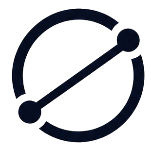

Explore company hubs
Browse experiences by employer, role, experience level, and year.

chordWhere every interview story meets.
Explore interview experiences organised by company, role, and round — and learn from the questions, decisions, and lessons candidates share.
INTERSECT aims to make interview preparation more transparent by collecting candidate experiences and organising them into useful company and role pages. Instead of searching through disconnected posts, learners can explore the rounds, topics, and questions that other candidates have shared.
Experiences are most useful when they are specific, honest, and clearly presented. INTERSECT is built around that idea: help candidates understand what a process can look like while remembering that every interview can differ.
Browse experiences by employer, role, experience level, and year.
See online assessments, technical discussions, coding, and HR stages.
Contribute an experience to help someone preparing after you.
Choose a company and role close to your own goal.
Review rounds, topics, and candidate takeaways.
Use the insights thoughtfully, then share your own experience when ready.